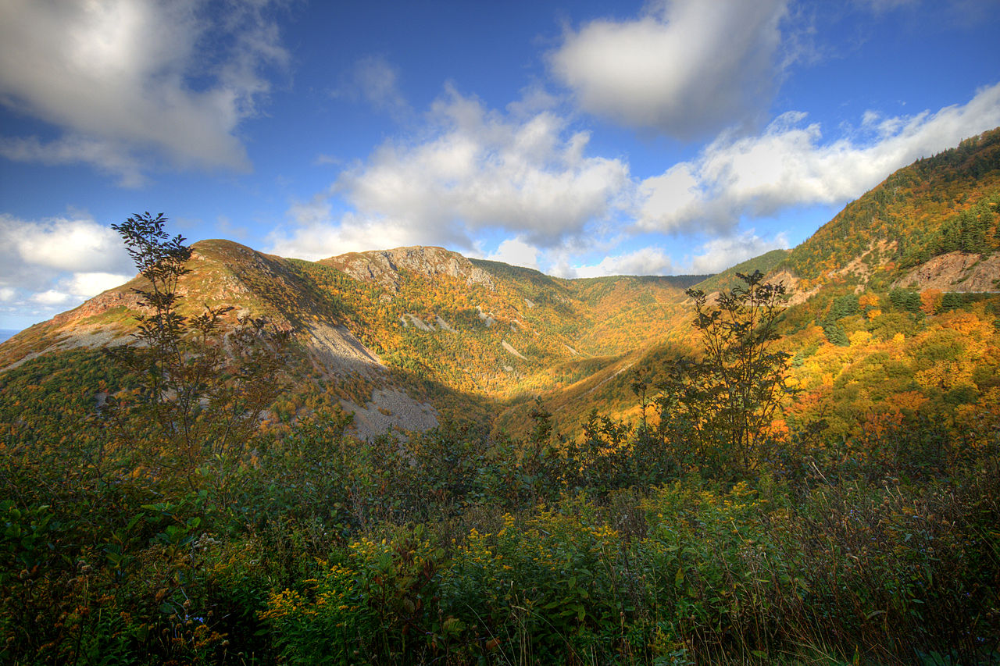

Main Page | Climate | Geographic History | Geographic Landforms | Wildlife and Vegetation | Human Activity | Tourism | Bibliography

This webpage will focus on the Atlantic Maritime Ecozone (AME). It is located on the Eastern coast of Canada and includes the provinces of Nova Scotia, Prince Edward Island (P.E.I.), and New Brunswick. Use the top navigation bar to see the various pages on different topics on the AME.
Info here
Info here
Thanks for reading!
Return to the top of the page.
© Trevor Li 2018, all rights reserved. All images by Trevor Li unless noted. Background image by the Lubuntu Artwork Team